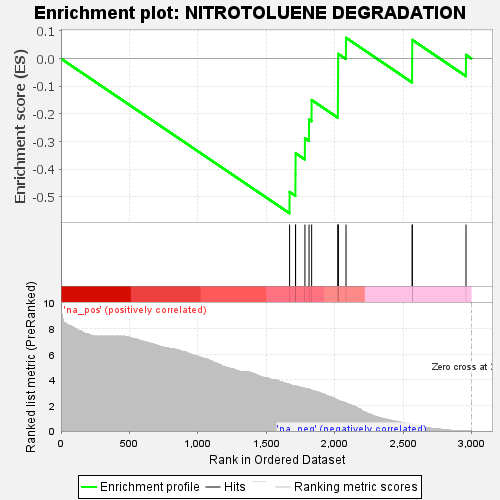
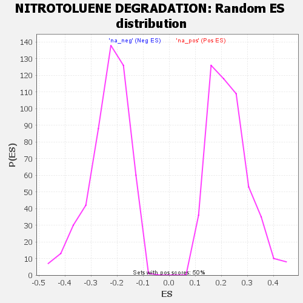

| | | Dataset | GSEA RNK clr Maaslin2 MucosalvsLuminal KO - Ileum.rnk |
| Phenotype | NoPhenotypeAvailable |
| Upregulated in class | na_neg |
| GeneSet | NITROTOLUENE DEGRADATION |
| Enrichment Score (ES) | -0.559129 |
| Normalized Enrichment Score (NES) | -2.3897822 |
| Nominal p-value | 0.0 |
| FDR q-value | 0.003584553 |
| FWER p-Value | 0.023 |
Table: GSEA Results Summary

Fig 1: Enrichment plot: NITROTOLUENE DEGRADATION
Profile of the Running ES Score & Positions of GeneSet Members on the Rank Ordered List

Fig 2: NITROTOLUENE DEGRADATION: Random ES distribution
Gene set null distribution of ES for NITROTOLUENE DEGRADATION